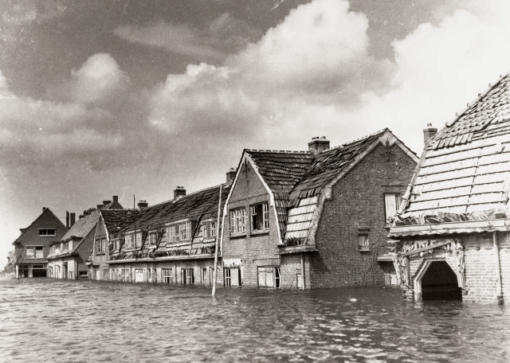
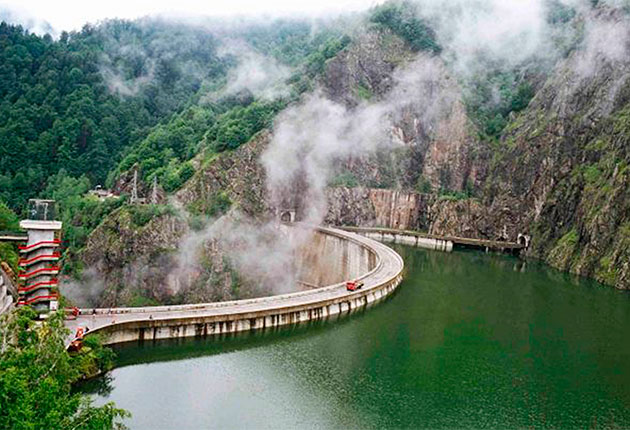

Efecte

Pagube economice indirecte constau din efectele pe care le au inundatiile asupra intreruperii temporare sau permanente a proceselor de productie, asupra intarzierilor produse in livrarea produselor si chiar prin reducerea exportului. Intervin apoi costurile suplimentare de transport, cele de aparare prin masurile adoptate in timpul inundatiilor, fara a mai vorbi de cheltuielile efectuate pentru normalizarea situatiei si reluarea activitatilor economice, ca si pentru plata asigufarii bunurilor materiale si umane.
Pe langa pagubele economice, care pot fi cuantificate, inundatiile au si efecte care se rasfrang atat asupra vietii sociale cat si asupra mediului inconjurator prin consecintele de ordin ecologic pe care ele le pot produce. Efectele sociale negative constau in primul rand din pierderile de vieti omenesti si consecintele ulterioare ale acestora asupra vietii comunitatilor umane si ale societatii in general. In timpul inundatiilor se desfasoara ample actiuni de evacuare a populatiei care duce la generarea de panica cu efecte psihologice negative. Daca nu sunt luate masurile de protectie medicala necesare, se poate ajunge la declansarea unor epidemii. Pe perioada inundatiilor sunt drastic diminuate veniturile populatiei fie prin intreruperea activitatilor fie prin pagubele directe pe care le suporta comunitatile riverane. Tot in aceasta categoric trebuie sa introducem si distrugerea unor valori culturale ale comunitatilor umane din arealele inundate.
Efectele ecologice negative sunt evidente prin degradarea mediului ambiant prin afectarea starii de calitate a factorilor sai. In timpul inundatiilor are loc poluarea apelor de suprafata prin antrenarea in albiile de rau a tuturor deseurilor de pe malurile apelor, prin descompunerea animalelor inecate si transportate, prin raperea conductelor de transport a produselor petroliere s.a. Are loc o poluare a apelor subterane si chiar poluarea solurilor din zonele inundate in cazul in care apele transporta astfel de substante.
Cauza
1. Cauze naturale
Aparitia inundatiilor se datoreaza in primul rand unor factori naturali legati de conditiile climatice care genereaza cantitati mari de precipitatii, furtuni. Cauzele climatice presupun o crestere a nivelurilor sau a debitelor peste valorile normale si revarsarea apelor in arealele limitrofe ca urmare a unor fenomene climatice deosebite.
Ploile si in special cele torentiale, constau in caderea unor cantitati mari de precipitatii intr-un timp foarte scurt, astfel incat capacitatea de infiltrare a solului este repede depasita si aproape intreaga cantitate de apa cazuta se scurge spre reteaua de vai generand viituri, depasirea capacitafii de transport a albiilor minore si deversarea apelor in albiile majore provocand inundatii.
In cazul raurilor, viiturile cu amplitudini mari de nivel stau la baza producerii inundatiilor in albiile majore. Cea mai importanta caracteristica a unei viituri este inaltimea apei in albie, pentru ca inainte de toate, ea este generata de o crestere a nivelului apelor. Pentru a se produce o inundatie este insa necesar ca in lungul raului sa existe o lunca inundabila. Exceptie fac sectoarele de chei si defilee din lungul raurilor unde nu se produc inundatii chiar la cresteri spectaculoase ale nivelurilor. Pentru a caracteriza o viitura sunt necesare o serie de valori cantitative asupra debitelor de apa scurse si a nivelurilor inregistrate. Uneori acestea ating valori impresionante, de peste 200.000 m3/s – Amazon. Topirea zapezilor este un alt factor important al producerii inundatiilor mai ales in zonele climatelor temperat si rece. De regula, procesul de topire a zapezilor genereaza apele mari de primavara sau de vara in zonele inalte. Acest proces poate fi insa accelerat de invaziile de mase de aer cald sau se poate asocia cu ploile cazute in acest interval.

2. Cauze antropice
Despaduririle efectuate de om in decursul timpului in toate regiunile globului au modificat foarte mult o serie de verigi ale circuitului hidric si prin aceasta au favorizat o scurgere mai puternica a apelor pe versanti. Ca urmare, amplitudinea viiturilor a crescut, de unde si niveluri mai mari si o sporire a pericolului de inundare a terenurilor joase din lungul raurilor.
Constructiile hidrotehnice efectuate fara a se cunoaste suficient de bine probabilitatea de aparitie a nivelurilor si a debitelor maxime pot pune in pericol comunitati umane si bunuri materiale. In cazul barajelor de exemplu, accidentele pot fi legate de o serie de calcule gresite ale planului barajului, de defectele rezultate la incastrarea corpului barajului in roca de baza, de calcularea gresita a rezistentei barajului, de deficiente de control a rezistentei barajului etc. Dintre toate accidentele produse pe plan mondial, 69% au aparut la barajele din pamant si din anrocamente si in 31% la alte tipuri de baraje. Se pare ca una din cauze consta in faptul ca aceste baraje au o mare neomogenitate a materialelor de umplutura si pot aparea procese de sufoziune fizica, de eroziune regresiva, de tasari, sau de aparitie a unor viituri exceptional inainte de terminarea constructiei.
Prevenire
Masurile de prevedere reprezinta un alt mijloc major de a ne apara de inundatii, mai ales acolo unde nu s-a reusit sa se construiasca diguri sau lacuri de acumulare. Aceste masuri merg de la masurarea si transmiterea nivelurilor pana la supravegherea situatiilor critice prin sateliti.
Masurarea si transmiterea nivelurilor care se inregistreaza la mirele hidrometrice instalate in lungul raurilor este o masura de prevedere care se impune. La fiecare mira hidrometrica s-au stabilit dinainte doua repere importante. Este vorba de cota de atentie si de cota de inundare, care daca este depasita apele raului se revarsa in albia majora provocand inundatii si pagube materiale. De exemplu, inundatiile din luna mai 1970 au inundat o suprafata de 1.112.000 ha, dintre care 699.179 ha erau deja insamantate. In astfel de cazuri, transmiterea cotelor nivelurilor este de foarte mare importanta pentru prognoza nivelurilor si diminuarea pagubelor pe cat posibil.
Prognoza evolutiei undelor de viitura in aval se realizeaza tocmai pe baza acestor transmisii pentru a se cunoaste dinainte dimensiunea pericolului si a se putea lua masurile necesare pentru prevenirea populatiei riverane din aval si evacuarea zonei inundabile.
In ultimul secol comunitatile umane stabilite sau cu activitati in regiunile supuse inundatiilor au depus un efort conjugat, bazat pe experienta si informatiile acumulate, pentru a-si proteja bunurile si vietile omenesti contra furiei acestor fenomene. Dintre acestea de cea mai mare importanta sunt digurile si lacurile de acumulare.
Digurile scot de sub influenza inundatiilor suprafete apreciabile de teren arabil, apara localitati si alte bunuri materiale situate in arealele expuse. In acest scop, in lungul Dunarii s-au construit diguri care au scos de sub influenta apelor atat lunca Dunarii cat si incintele bailor lalomitei si Brailei. Pentru reusita unor astfel de lucrari se fac studii detaliate asupra regimului de scurgere al raurilor pentru a vedea periodicitatea de aparitie a unor astfel de fenomene si amplitudinea nivelurilor la diferite probabilitati, pentru a sti cat de inalte sa se construiasca digurile. In cazul Dunarii, remarcam ca digurile construite au rezistat cu bine viiturii maxime produse pe cursul inferior al Dunarii in anul 1970.
Construirea lacurilor de acumulare. Se stie ca regimul de scurgere al arterelor hidrografice este foarte neregulat, cu perioade scurte in care exista un excedent de apa care depaseste cu mult consumurile din bazin si altele cu mult mai lungi in care resursele sunt mult reduse si nu ajung pentru acoperirea necesitatilor. Pentru a inlatura acest inconvenient, s-au construit salbe de lacuri de acumulare cu scopul de a retine apele din perioadele cu exces si a le folosi in perioadele cu deficit. In acest fel se produce o atenuare a undelor de viitura si apele se pot folosi pentru hidroenergie, alimentari cu apa potabila si industriala, piscicultura, irigatii si agrement. Aceste lacuri, de regula construite in salba, cum se observa pe Bistrita, Arges, Olt, preiau surplusul de apa din timpul viiturilor, il stocheaza si il refolosesc in cazul in care scurgerea are valori minime si sunt necesare mai multe resurse de apa. In felul acesta este eliminat pericolul inundatiilor sau al viiturilor catastrofale. Proiectarea lacurilor de acumulare si construirea lor cer foarte multe fonduri si eforturi materiale din care cauza se impun studii aprofundate asupra efectelor pe care pot se le aiba astfel de constructii asupra mediului. Apoi se pune acut problema eficientei lor. Un exemplu concludent il constitute lacurile de pe Arges din regiunea subcarpatica si in special lacul Pitesti care la numai patru ani de la darea in folosinta a fost aproape complet calamitat fara a mai putea fi folosit pentru scopurile pentru care a fost construit. Tot ca masuri de protectie se pot mentiona si o serie de lucrari care se efectueaza direct in albiile de rau care sa le mareasca capacitatea lor de transport prin regularizarea malurilor (taierea unor meandre, taierea de canale care sa preia o parte din apele in exces), sau zone joase de tip polder care sa preia o parte din apele viiturilor cu scopul de a le atenua.